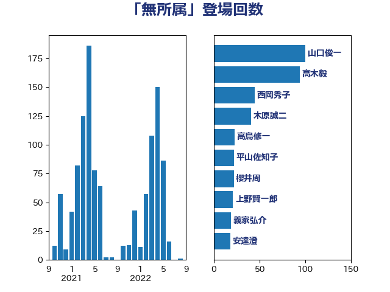

単語「無所属」

| 山口俊一 | 自由民主党 | 100 回 |
| 高木毅 | 自由民主党 | 94 回 |
| 西岡秀子 | 国民民主党 | 45 回 |
| 木原誠二 | 自由民主党 | 41 回 |
| 高鳥修一 | 自由民主党 | 23 回 |
| 平山佐知子 | 無所属 | 22 回 |
| 櫻井周 | 立憲民主党 | 22 回 |
| 上野賢一郎 | 自由民主党 | 21 回 |
| 義家弘介 | 自由民主党 | 19 回 |
| 安達澄 | 無所属 | 18 回 |
| 須藤元気 | 無所属 | 18 回 |
| あかま二郎 | 自由民主党 | 17 回 |
| 岡本あき子 | 立憲民主党 | 15 回 |
| 鈴木馨祐 | 自由民主党 | 15 回 |
| 新垣邦男 | 立憲民主党 | 14 回 |
| 橋本岳 | 自由民主党 | 14 回 |
| 柚木道義 | 立憲民主党 | 13 回 |
| 中根一幸 | 自由民主党 | 12 回 |
| 浅野哲 | 国民民主党 | 12 回 |
| 赤羽一嘉 | 公明党 | 11 回 |
| 道下大樹 | 立憲民主党 | 11 回 |
| 平口洋 | 自由民主党 | 10 回 |
| 金子恭之 | 自由民主党 | 10 回 |
| 鎌田さゆり | 立憲民主党 | 10 回 |
| 根本匠 | 自由民主党 | 8 回 |
| 永岡桂子 | 自由民主党 | 8 回 |
| 田嶋要 | 立憲民主党 | 8 回 |
| 神谷裕 | 立憲民主党 | 8 回 |
| 米山隆一 | 立憲民主党 | 8 回 |
| 越智隆雄 | 自由民主党 | 8 回 |
| 金田勝年 | 自由民主党 | 8 回 |
| 鈴木庸介 | 立憲民主党 | 8 回 |
| 関芳弘 | 自由民主党 | 8 回 |
| おおつき紅葉 | 立憲民主党 | 7 回 |
| 前原誠司 | 国民民主党 | 7 回 |
| 古川元久 | 国民民主党 | 7 回 |
| 小宮山泰子 | 立憲民主党 | 7 回 |
| 海江田万里 | 立憲民主党 | 7 回 |
| 緑川貴士 | 立憲民主党 | 7 回 |
| 古屋範子 | 公明党 | 6 回 |
| 小里泰弘 | 自由民主党 | 6 回 |
| 森山浩行 | 立憲民主党 | 6 回 |
| 源馬謙太郎 | 立憲民主党 | 6 回 |
| 石原宏高 | 自由民主党 | 6 回 |
| 薗浦健太郎 | 自由民主党 | 6 回 |
| 吉良州司 | 無所属 | 5 回 |
| 寺田静 | 無所属 | 5 回 |
| 山崎誠 | 立憲民主党 | 5 回 |
| 泉健太 | 立憲民主党 | 5 回 |
| 神津たけし | 立憲民主党 | 5 回 |
| 藤岡隆雄 | 立憲民主党 | 5 回 |
| 井坂信彦 | 立憲民主党 | 4 回 |
| 大串博志 | 立憲民主党 | 4 回 |
| 阿部知子 | 立憲民主党 | 4 回 |
| 伊藤俊輔 | 立憲民主党 | 3 回 |
| 吉田はるみ | 立憲民主党 | 3 回 |
| 奥野総一郎 | 立憲民主党 | 3 回 |
| 末松義規 | 立憲民主党 | 3 回 |
| 枝野幸男 | 立憲民主党 | 3 回 |
| 渡辺周 | 立憲民主党 | 3 回 |
| 玄葉光一郎 | 立憲民主党 | 3 回 |
| 田村まみ | 国民民主党 | 3 回 |
| 谷田川元 | 立憲民主党 | 3 回 |
| 重徳和彦 | 立憲民主党 | 3 回 |
| 階猛 | 立憲民主党 | 3 回 |
| 伊東良孝 | 自由民主党 | 2 回 |
| 伊藤忠彦 | 自由民主党 | 2 回 |
| 吉川元 | 立憲民主党 | 2 回 |
| 吉田統彦 | 立憲民主党 | 2 回 |
| 坂本祐之輔 | 立憲民主党 | 2 回 |
| 城内実 | 自由民主党 | 2 回 |
| 堤かなめ | 立憲民主党 | 2 回 |
| 大塚拓 | 自由民主党 | 2 回 |
| 大西健介 | 立憲民主党 | 2 回 |
| 小渕優子 | 自由民主党 | 2 回 |
| 山田勝彦 | 立憲民主党 | 2 回 |
| 松島みどり | 自由民主党 | 2 回 |
| 森英介 | 自由民主党 | 2 回 |
| 牧義夫 | 立憲民主党 | 2 回 |
| 玉木雄一郎 | 国民民主党 | 2 回 |
| 福島伸享 | 無所属 | 2 回 |
| 稲富修二 | 立憲民主党 | 2 回 |
| 細田博之 | 自由民主党 | 2 回 |
| 細野豪志 | 自由民主党 | 2 回 |
| 芳賀道也 | 国民民主党 | 2 回 |
| 逢坂誠二 | 立憲民主党 | 2 回 |
| 逢沢一郎 | 自由民主党 | 2 回 |
| 野田佳彦 | 立憲民主党 | 2 回 |
| 中島克仁 | 立憲民主党 | 1 回 |
| 原口一博 | 立憲民主党 | 1 回 |
| 嘉田由紀子 | 無所属 | 1 回 |
| 城井崇 | 立憲民主党 | 1 回 |
| 大河原まさこ | 立憲民主党 | 1 回 |
| 宮本岳志 | 日本共産党 | 1 回 |
| 小熊慎司 | 立憲民主党 | 1 回 |
| 岡田克也 | 立憲民主党 | 1 回 |
| 後藤祐一 | 立憲民主党 | 1 回 |
| 徳永久志 | 立憲民主党 | 1 回 |
| 本庄知史 | 立憲民主党 | 1 回 |
| 森田俊和 | 立憲民主党 | 1 回 |
| 櫛渕万里 | れいわ新選組 | 1 回 |
| 櫻井充 | 自由民主党 | 1 回 |
| 白石洋一 | 立憲民主党 | 1 回 |
| 荒井優 | 立憲民主党 | 1 回 |
| 菅義偉 | 自由民主党 | 1 回 |
| 菊田真紀子 | 立憲民主党 | 1 回 |
| 落合貴之 | 立憲民主党 | 1 回 |
| 西村智奈美 | 立憲民主党 | 1 回 |
| 鈴木義弘 | 国民民主党 | 1 回 |
| 長妻昭 | 立憲民主党 | 1 回 |